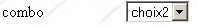
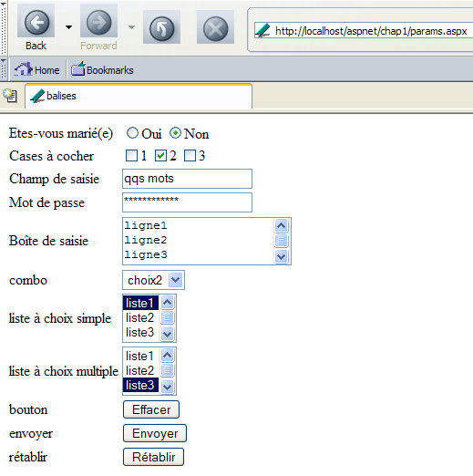
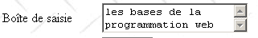

2. 基础知识
本章将介绍Web编程的基础知识。其主要目的是帮助读者了解Web编程的基本原则，这些原则与具体实现所采用的技术无关。书中提供了大量示例，建议读者亲自测试，以便逐步“领悟”Web开发的理念。 测试所需的免费工具在文档末尾名为“Web工具”的附录中列出。
2.1. Web应用程序的组成部分
Machine Serveur

15客户端
编号 | 角色 | 常见示例 |
OS 服务器 | Linux、Windows | |
Web 服务器 | Apache（Linux、Windows） IIS (NT)、PWS(Win9x)、Cassini (Windows+平台 .NET) | |
在服务器端执行的脚本。它们可以由服务器模块或服务器外部的程序执行（CGI）。 | PERL (Apache, IIS, PWS) VBSCRIPT (IIS, PWS) JAVASCRIPT (IIS,PWS) PHP (Apache, IIS, PWS) JAVA (Apache, IIS, PWS) C#，VB.NET (IIS) | |
数据库——该数据库可以位于运行程序的同一台机器上，也可以通过互联网位于另一台机器上。 | Oracle (Linux, Windows) MySQL (Linux、Windows) Postgres (Linux, Windows) Access (Windows) SQL Server (Windows) | |
OS 客户端 | Linux、Windows | |
Web 浏览器 | Netscape、Internet Explorer、Mozilla、Opera | |
在浏览器中执行的客户端脚本。这些脚本无法访问客户端的磁盘。 | VBscript (IE) JavaScript (IE, Netscape) Perl脚本 (IE) 小程序 JAVA |
2.2. 带表单的Web应用程序中的数据交换

客户端服务器
编号 | 角色 |
浏览器首次请求 URL，请求 (http://machine/url)。未传递任何参数。 | |
Web 服务器向其发送了该 URL 的网页。 该页面可以是静态的，也可以由服务器脚本（SA）动态生成，该脚本可能使用了数据库中的内容（SB、SC）。 在此，脚本将检测到 URL 是在未传递参数的情况下被请求的，并生成初始页面 WEB。 浏览器接收该页面并进行显示（CA）。浏览器端的脚本（CB）可能已修改了服务器发送的初始页面。 随后，通过用户（CD）与脚本（CB）之间的交互，网页将被修改。特别是表单将被填写。 | |
用户提交表单数据，这些数据随后将被发送至Web服务器。 浏览器将重新请求初始的URL或根据具体情况请求其他资源，同时将表单值传输给服务器。为此，它可以使用两种方法，即GET和POST。 收到客户端请求后，服务器将触发与所请求的URL关联的脚本（SA），该脚本将检测参数并进行处理。 | |
服务器返回由程序生成的页面 WEB（SA、SB、SC）。此步骤与前面的步骤 2 完全相同。 后续交互将按照步骤2和步骤3进行。 |
2.3. Notations
接下来，我们将假设已安装若干工具，并采用以下符号：
符号 | 含义 |
Apache服务器树的根目录 | |
Apache 提供的网页根目录。网页必须位于此根目录下。因此，URL http://localhost/page1.htm 对应于文件 <apache-DocumentRoot>\page1.htm。 | |
与别名 cgi-bin 关联的目录树根目录，可在此放置 Apache 的 CGI 脚本。 因此，URL http://localhost/cgi-bin/test1.pl 对应于文件 <apache-cgi-bin>\test1.pl。 | |
由 IIS、PWS 或 Cassini 生成的网页根目录。 网页必须位于此根目录下。因此，URL http://localhost/page1.htm 对应于文件 <IIS-DocumentRoot>\page1.htm。 | |
Perl 语言树的根目录。可执行文件 perl.exe 通常位于 <perl>\bin. | |
PHP语言树的根节点。可执行文件php.exe通常位于<php>. | |
Java 树根。与 Java 相关的可执行文件位于 <java>\bin. | |
Tomcat 服务器的根目录中。Servlet 示例位于 <tomcat>\webapps\examples\servlets，页面示例位于 JSP 和 <tomcat>\webbapps\examples\jsp |
关于这些工具的安装指南，请参阅附录。
2.4. 静态网页、动态网页
静态网页由一个文件 HTML 表示。而动态网页则由 Web 服务器“即时”生成。 本节将通过使用不同Web服务器和编程语言进行多种测试，以展示Web概念的普适性。我们将使用名为Apache和IIS的两款Web服务器。虽然IIS是商业产品，但它提供了两个功能更有限但免费的版本：
- 适用于 Win9x 系统的 PWS
- Cassini 适用于 Windows 2000 系统，以及 XP
<IIS-DocumentRoot> 文件夹通常为 [lecteur:\inetpub\wwwroot]，其中 [lecteur] 代表安装 IIS 的磁盘（C、D 等）。 PWS的情况亦是如此。对于Cassini，<IIS-DocumentRoot>文件夹取决于服务器的启动方式。附录中展示了Cassini服务器可通过DOS窗口（或快捷方式）按以下方式启动：
名为 [WebServer] 的应用程序（也称为 Cassini Web 服务器）支持三个参数：
- /port：Web服务的端口号。可以是任意值。默认值为80
- /path：磁盘上文件夹的物理路径
- /vpath：与上述物理文件夹关联的虚拟文件夹。请注意，其语法并非 /path=路径，而是 /vpath:路径，这与上方的帮助面板所述不同。
如果以以下方式启动 Cassini：
那么文件夹 P 即是 Cassini 服务器 Web 树的根目录。因此，<IIS-DocumentRoot> 所指的就是该文件夹。例如在以下示例中：
Cassini 服务器将在 80 端口运行，其 <IIS-DocumentRoot> 目录根为 [d:\data\devel\webmatrix] 文件夹。待测试的网页必须位于该根目录下。
接下来，每个 Web 应用程序将由一个唯一的文件表示，该文件可以使用任何文本文件构建。不需要 IDE。
2.4.1. 静态页面 HTML（HyperText 标记语言）
考虑以下 HTML 代码：
<html>
<head>
<title>essai 1 : une page statique</title>
</head>
<body>
<center>
<h1>Une page statique...</h1>
</body>
</html>
生成了以下网页：
测试

测试1
- 启动 Apache 服务器
- 将脚本 essai1.html 放入 <apache-DocumentRoot>
- 使用浏览器查看 URL http://localhost/essai1.html
- 停止 Apache 服务器
测试2
- 启动 IIS/PWS/Cassini 服务器
- 将脚本 essai1.html 放入 <IIS-DocumentRoot>
- 使用浏览器查看 URL http://localhost/essai1.html
2.4.2. 一个 ASP 页面（Active Server Pages）
脚本 essai2.asp：
<html>
<head>
<title>essai 1 : une page asp</title>
</head>
<body>
<center>
<h1>Une page asp générée dynamiquement par le serveur PWS</h1>
<h2>Il est <% =time %></h2>
<br>
A chaque fois que vous rafraîchissez la page, l'heure change.
</body>
</html>
生成以下网页：

测试
- 启动服务器 IIS/PWS
- 将脚本 essai2.asp 放入 <IIS-DocumentRoot>
- 使用浏览器访问 URL http://localhost/essai2.asp
2.4.3. 一个 PERL 脚本（实用提取与报告语言）
essai3.pl脚本：
#!d:\perl\bin\perl.exe
($secondes,$minutes,$heure)=localtime(time);
print <<HTML
Content-type: text/html
<html>
<head>
<title>essai 1 : un script Perl</title>
</head>
<body>
<center>
<h1>Une page générée dynamiquement par un script Perl</h1>
<h2>Il est $heure:$minutes:$secondes</h2>
<br>
A chaque fois que vous rafraîchissez la page, l'heure change.
</body>
</html>
HTML
;
第一行是可执行文件 perl.exe 的路径。如有需要，请进行调整。该脚本由 Web 服务器执行后，将生成以下页面：

测试
- Web 服务器：Apache
- 备注：请根据 Apache 版本查看 <apache>\confs 目录中，查找提及 cgi-bin 的行，以确定放置 essai3.pl 的 <apache-cgi-bin> 目录。
- 将脚本 essai3.pl 放入 <apache-cgi-bin>
- 访问网址 http://localhost/cgi-bin/essai3.pl
请注意，加载页面 perl 所需的时间比加载页面 asp 更长。这是因为 Perl 脚本由 Perl 解释器执行，而该解释器必须在执行脚本之前加载。它不会一直驻留在内存中。
2.4.4. 一个 PHP 脚本（HyperText 处理器）
脚本 essai4.php
<html>
<head>
<title>essai 4 : une page php</title>
</head>
<body>
<center>
<h1>Une page PHP générée dynamiquement</h1>
<h2>
<?
$maintenant=time();
echo date("j/m/y, h:i:s",$maintenant);
?>
</h2>
<br>
A chaque fois que vous rafraîchissez la page, l'heure change.
</body>
</html>
上述脚本生成了以下网页：

测试
测试1
- 请查阅 Apache 的配置文件 srm.conf 或 httpd.conf（位于 <Apache>\confs 中）
- 仅供参考，请检查 php 的配置行
- 启动 Apache 服务器
- 将 essai4.php 放入 <apache-DocumentRoot>
- 请求 URL http://localhost/essai4.php
Test2
- 启动服务器 IIS/PWS
- 仅供参考，检查 PWS 的 PHP 配置
- 将 essai4.php 放入 <IIS-DocumentRoot>\php
- 请求 URL http://localhost/essai4.php
2.4.5. 一个 JSP 脚本（Java Server Pages）
脚本 heure.jsp
<% //显示时间的 Java 程序 %>
<%@ page import="java.util.*" %>
<%
// 用于计算时间的代码 JAVA
Calendar calendrier=Calendar.getInstance();
int heures=calendrier.get(Calendar.HOUR_OF_DAY);
int minutes=calendrier.get(Calendar.MINUTE);
int secondes=calendrier.get(Calendar.SECOND);
// 时、分、秒是全局变量
// 可在代码 HTML 中使用
%>
<% // 代码 HTML %>
<html>
<head>
<title>Page JSP affichant l'heure</title>
</head>
<body>
<center>
<h1>Une page JSP générée dynamiquement</h1>
<h2>Il est <%=heures%>:<%=minutes%>:<%=secondes%></h2>
<br>
<h3>A chaque fois que vous rechargez la page, l'heure change</h3>
</body>
</html>
该脚本由Web服务器执行后，将生成以下页面：

测试
- 将脚本 heure.jsp 放置在 <tomcat>\jakarta-tomcat\webapps\examples\jsp（Tomcat 3.x）或 <tomcat>\webapps\examples\jsp（Tomcat 4.x）中
- 启动 Tomcat 服务器
- 访问 URL http://localhost:8080/examples/jsp/heure.jsp
2.4.6. 一个 ASP.NET 页面
脚本 heure1.aspx：
<html>
<head>
<title>Démo asp.net </title>
</head>
<body>
Il est <% =Date.Now.ToString("hh:mm:ss") %>
</body>
</html>
该脚本由Web服务器执行后，将生成以下页面：

此测试需要一台已安装 .NET 平台的 Windows 机器（参见附录）。
- 将脚本 heure1.aspx 放入 <IIS-DocumentRoot>
- 启动服务器 IIS/CASSINI
- 请求 URL http://localhost/heure1.aspx
2.4.7. 结论
前面的示例表明：
- HTML 页面可以由程序动态生成。这正是 Web 编程的全部意义所在。
- 所使用的语言和Web服务器可以多种多样。目前主要呈现以下趋势：
- Apache/PHP（Windows、Linux）和 IIS/PHP（Windows）组合
- 在Windows平台上，将IIS服务器与.NET语言（如C#、VB.NET等）结合使用的ASP.NET技术
- Java Servlet 技术及 JSP 页面，可在不同服务器（Tomcat、Apache、IIS）和不同平台（Windows、Linux）上运行。
2.5. 浏览器端脚本
HTML 页面可包含由浏览器执行的脚本。浏览器端脚本语言种类繁多，以下列举部分：
语言 | 支持的浏览器 |
VBScript | IE |
Javascript | IE, Netscape |
PerlScript | IE |
Java | IE, Netscape |
让我们来看几个例子。
2.5.1. 一个包含VBScript脚本的网页（在浏览器端运行）
页面 vbs1.html
<html>
<head>
<title>essai : une page web avec un script vb</title>
<script language="vbscript">
function reagir
alert "Vous avez cliqué sur le bouton OK"
end function
</script>
</head>
<body>
<center>
<h1>Une page Web avec un script VB</h1>
<table>
<tr>
<td>Cliquez sur le bouton</td>
<td><input type="button" value="OK" name="cmdOK" onclick="reagir"></td>
</tr>
</table>
</body>
</html>
上方的 HTML 页面不仅包含 HTML 代码，还包含一个供加载该页面的浏览器执行的程序。代码如下：
<script language="vbscript">
function reagir
alert "Vous avez cliqué sur le bouton OK"
end function
</script>
<script></script> 标签用于在 HTML 页面中界定脚本。 这些脚本可以使用不同的语言编写，而 <script> 标签中的 language 选项则指定了所使用的语言。此处为 VBScript。 我们在此不作详细说明。上述脚本定义了一个名为 réagir 的函数，用于显示一条消息。该函数何时被调用？下方的代码行 HTML 给出了答案：
onclick 属性指定了当用户点击 OK 按钮时要调用的函数名称。当浏览器加载此页面且用户点击 OK 按钮后，将显示以下页面：

测试
只有 IE 浏览器能够执行 VBScript 脚本。Netscape 需要安装插件才能实现此功能。可以进行以下测试：
- Apache 服务器
- 在 <apache-DocumentRoot> 中运行脚本 vbs1.html
-
使用 IE 浏览器访问网址 http://localhost/vbs1.html
-
IIS/PWS 服务器
- vbs1.html脚本位于<pws-DocumentRoot>中
- 使用浏览器 IE 请求网址 http://localhost/vbs1.html
一个包含JavaScript脚本的网页（浏览器端）
La page : js1.html
<html>
<head>
<title>essai 4 : une page web avec un script Javascript</title>
<script language="javascript">
function reagir(){
alert ("Vous avez cliqué sur le bouton OK");
}
</script>
</head>
<body>
<center>
<h1>Une page Web avec un script Javascript</h1>
<table>
<tr>
<td>Cliquez sur le bouton</td>
<td><input type="button" value="OK" name="cmdOK" onclick="reagir()"></td>
</tr>
</table>
</body>
</html>
这与上一页的内容完全相同，只是将 VBScript 语言替换为 Javascript 语言。Javascript 的优势在于它既被 IE 浏览器也支持，同时也兼容 Netscape 浏览器。执行后会得到相同的结果：

测试
- Apache 服务器
- js1.html脚本位于<apache-DocumentRoot>中
-
使用 IE 或 Netscape 浏览器访问网址 http://localhost/js1.html
-
服务器 IIS/PWS
- js1.html脚本位于<pws-DocumentRoot>中
- 使用浏览器 IE 或 Netscape 访问网址 http://localhost/js1.html
2.6. 客户端与服务器的交互
让我们回到最初的示意图，该图展示了Web应用程序的参与者：

服务器
本文重点探讨客户端与服务器端之间的交互。这些交互通过网络进行，在此有必要回顾两台远程机器之间交互的一般结构。
2.6.1. OSI模型
由国际标准化组织（ISO）定义的开放系统互连参考模型（OSI）OSI，描述了一个理想网络，其中机器间的通信可通过七层模型来表示：

每一层从下层接收服务，并向上层提供服务。假设位于不同机器A和B上的两个应用程序想要通信：它们在Application层进行通信。 它们无需了解网络运行的所有细节：每个应用程序将想要传输的信息交给下层——即 Présentation 层。因此，应用程序只需了解与 Présentation 层交互的规则即可。 一旦信息进入Présentation层，它就会根据其他规则传递到Session层，以此类推，直到信息到达物理介质并被物理传输到目标机器。 到达后，它将经历与在发送方机器上所经历的相反的处理过程。
在每一层，负责发送信息的发送方进程将其发送给另一台机器上属于同一层的接收方进程。这一过程遵循某些规则，即所谓的“该层协议”。因此，最终的通信图示如下：

各层的作用如下：
负责在物理介质上传输比特。 该层包含数据处理终端设备（E.T.T.D.），如终端或计算机，以及数据电路终端设备（E.T.C.D.），如调制解调器、多路复用器和集中器。该层的主要关注点包括： . 信息编码方式的选择（模拟或数字） . 传输模式的选择（同步或异步）。 | |
隐藏物理层的物理特性。检测并纠正传输错误。 | |
管理网络中发送的信息应遵循的路径。这被称为 routage：确定信息应遵循的路线，以便其到达收件人。 | |
允许两个应用程序之间进行通信，而前几层仅支持机器间的通信。该层提供的一项服务可能是多路复用：传输层可以利用同一条网络连接（机器到机器）来传输属于多个应用程序的信息。 | |
该层包含允许应用程序在远程机器上建立并维持工作会话的服务。 | |
该层旨在统一不同机器上的数据表示形式。因此，来自机器A的数据在发送至网络之前，将由机器A的Présentation层按照标准格式进行“包装”。 数据到达目标机器B的Présentation层后，该层将通过标准格式识别数据，并对其进行重新包装，以便机器B上的应用程序能够识别。 | |
在此层级，通常存在与用户密切相关的应用程序，例如电子邮件或文件传输。 |
2.6.2. 型号 TCP/IP
型号 OSI 是一个理想的模型。协议套件 TCP/IP 以以下形式接近该模型：

- 网络接口（计算机的网卡）承担 OSI 模型中第 1 层和第 2 层的功能
- IP层（互联网协议）承担第3层（网络层）的功能
- TCP层（传输控制协议）或UDP层（用户数据报协议）负责第4层（传输层）的功能。 TCP协议确保机器之间交换的数据包能够顺利到达目的地。如果未能到达，它会将丢失的数据包重新发送。 UDP协议不承担此项工作，因此需要由应用程序开发人员来处理。正因如此，在并非100%可靠的互联网环境中，TCP协议才是最常用的。 因此，我们称之为 TCP-IP 网络。
- 应用层涵盖了 OSI 模型中第 5 至第 7 层的功能。
Web 应用程序位于 Application 层，因此基于 TCP-IP 协议。 客户端和服务器端的 Application 层之间交换消息，这些消息由模型的第 1 至第 4 层负责转发至目的地。为了相互理解，两台机器的应用程序层必须“使用”相同的语言或协议。 Web应用程序所用的协议称为HTTP（HyperText传输协议）。这是一种文本型协议，即c.a.d，机器通过在网络上交换文本行来实现互通。 这些交互是标准化的，即客户端拥有若干消息来向服务器精确表达其需求，而服务器也拥有若干消息向客户端返回响应。这种消息交互的形式如下：

客户端 --> 服务器
当客户端向Web服务器发出请求时，会发送
- 格式为 HTTP 的文本行来表明其需求
- 空行
- 可选的文档
服务器 --> 客户端
当服务器向客户端响应时，它会发送
- 格式为 HTTP 的文本行，以说明其发送的内容
- 一行空行
- 可选地发送一个文档
因此，双向通信采用相同的格式。在两种情况下，都可能发送文档，尽管客户端向服务器发送文档的情况较为罕见。 但 HTTP 协议对此有所规定。正因如此，例如互联网服务提供商的用户才能将各类文档上传至该服务商托管的个人网站。交换的文档可以是任意类型的。以浏览器请求包含图片的网页为例：
- 浏览器连接到Web服务器并请求所需的页面。所请求的资源通过URL（统一资源定位符）进行唯一标识。浏览器仅发送HTTP头部信息，而不发送任何文档。
- 服务器向其响应。它首先发送 HTTP 头部，表明将发送何种类型的响应。如果请求的页面不存在，则可能返回错误。 如果页面存在，服务器将在响应的 HTTP 标头中说明，随后将发送一个 HTML 文档（HyperText 标记语言）。 该文档由一系列 HTML 格式的文本行组成。HTML 文本包含标记（标签），这些标记向浏览器提供如何显示文本的指示。
- 客户端根据服务器的 HTTP 标头得知，它将收到一个 HTML 文档。 它将分析该文档，并可能发现其中包含图片引用。这些图片并不在 HTML 文档中。因此，它向同一台 Web 服务器发出新的请求，以获取所需的第一个图片。该请求与步骤 1 中的请求完全相同，只是请求的资源不同。 服务器将处理此请求，向客户端发送所请求的图片。此次，在响应中，HTTP的头部信息将明确指出所发送的文件是一张图片，而非HTML文档。
- 客户端接收所发送的图像。步骤3和4将不断重复，直到客户端（通常是浏览器）获取到所有能够完整显示该页面的文档为止。
2.6.3. HTTP协议
让我们通过实例来了解 HTTP 协议。浏览器和 Web 服务器之间会交换什么？
2.6.3.1. HTTP服务器的响应
我们将在此了解 Web 服务器如何响应客户端的请求。Web 服务或 HTTP 服务通常在 80 端口上运行。它也可能在其他端口上运行。 在这种情况下，客户端浏览器必须在其发出的请求中明确指定该端口。一个请求的一般形式如下：
其中
协议 | http。浏览器还可以作为FTP、新闻、Telnet等服务的客户端。 |
主机 | 运行Web服务的机器名称 |
端口 | Web服务的端口。若为80，可省略端口号。这是最常见的情况 |
路径 | 指向所请求资源的路径 |
信息 | 提供给服务器的补充信息，用于明确客户端的请求 |
当用户请求加载一个 URL 文件时，浏览器会执行什么操作？
- 它会与URL文件中machine[:port]部分指定的机器和端口建立TCP-IP通信连接。 建立 TCP-IP 通信，即是在两台机器之间创建一条通信“管道”。一旦该管道建立，两台机器之间交换的所有信息都将通过它传输。 创建这条通道TCP-IP尚不涉及Web协议HTTP。
- TCP-IP管道建立后，客户端将向Web服务器发起请求，并通过发送HTTP格式的文本行（即命令）来完成。它会向服务器发送URL中的路径/信息部分
- 服务器将通过同一管道以相同方式进行响应
- 双方中的一方将决定关闭该通道。这取决于所使用的 HTTP 协议。 在 HTTP 1.0 协议下，服务器会在每次响应后关闭连接。这迫使需要多次请求以获取构成网页的各个文档的客户端，在每次请求时都必须建立新的连接，从而产生额外开销。 在 HTTP/1.1 协议下，客户端可以指示服务器保持连接开放，直到客户端要求关闭为止。因此，客户端可以通过单次连接获取网页的所有文档，并在获取最后一个文档后自行关闭连接。服务器将检测到此关闭操作，并随之关闭连接。
为了了解客户端与Web服务器之间的交互，我们将使用一个名为curl的工具。Curl是一款DOS应用程序，可作为支持多种协议（HTTP、FTP、 TELNET、GOPHER、……）。curl可在http://curl.haxx.se/上获取。 这里建议下载 Windows 版的 win32-nossl，因为 win32-ssl 版本需要额外的 DLL 文件，而这些文件并未包含在 curl 软件包中。该软件包包含一组文件，只需将其解压到一个文件夹中，我们将其命名为 <curl>。该文件夹中包含一个名为 [curl.exe] 的可执行文件。 这将作为我们查询Web服务器的客户端。打开一个DOS窗口，并进入<curl>文件夹：
dos>dir curl.exe
22/03/2004 13:29 299 008 curl.exe
E:\curl2>curl
curl: try 'curl --help' for more information
dos>curl --help | more
Usage: curl [options...] <url>
Options: (H) means HTTP/HTTPS only, (F) means FTP only
-a/--append Append to target file when uploading (F)
-A/--user-agent <string> User-Agent to send to server (H)
--anyauth Tell curl to choose authentication method (H)
-b/--cookie <name=string/file> Cookie string or file to read cookies from (H)
--basic Enable HTTP Basic Authentication (H)
-B/--use-ascii Use ASCII/text transfer
-c/--cookie-jar <file> Write cookies to this file after operation (H)
....
让我们使用这个应用程序来查询一个Web服务器，并了解客户端与服务器之间的交互。我们将处于以下情况：

Web 服务器可以是任意一个。我们在此旨在探索 Web 客户端 curl 与 Web 服务器之间将发生的交互。此前，我们创建了以下静态页面 HTML：
<html>
<head>
<title>essai 1 : une page statique</title>
</head>
<body>
<center>
<h1>Une page statique...</h1>
</body>
</html>
我们在浏览器中看到的代码如下：

可见，所请求的 URL 实际为：http://localhost/aspnet/chap1/statique1.html。 因此，Web服务器的IP地址是localhost（=本地机器），端口是80。如果查看该网页的源代码（视图/源代码），会发现最初创建的文本HTML：

现在，让我们使用客户端 CURL 请求相同的 URL：
dos>curl http://localhost/aspnet/chap1/statique1.html
<html>
<head>
<title>essai 1 : une page statique</title>
</head>
<body>
<center>
<h1>Une page statique...</h1>
</body>
</html>
我们可以看到，Web 服务器向其发送了一组文本行，这些文本行代表了所请求页面中的代码 HTML。我们之前提到过，Web 服务器的响应通常采用以下形式：

然而在此处，我们并未看到 HTTP 这些标头。这是因为 [curl] 默认情况下不会显示它们。使用 --include 选项可以显示这些标头：
E:\curl2>curl --include http://localhost/aspnet/chap1/statique1.html
HTTP/1.1 200 OK
Server: Microsoft ASP.NET Web Matrix Server/0.6.0.0
Date: Mon, 22 Mar 2004 16:51:00 GMT
X-AspNet-Version: 1.1.4322
Cache-Control: public
ETag: "1C4102CEE8C6400:1C4102CFBBE2250"
Content-Type: text/html
Content-Length: 161
Connection: Close
<html>
<head>
<title>essai 1 : une page statique</title>
</head>
<body>
<center>
<h1>Une page statique...</h1>
</body>
</html>
服务器确实发送了一系列 HTTP 头部，后面紧跟着一行空行：
HTTP/1.1 200 OK
Server: Microsoft ASP.NET Web Matrix Server/0.6.0.0
Date: Mon, 22 Mar 2004 16:51:00 GMT
X-AspNet-Version: 1.1.4322
Cache-Control: public
ETag: "1C4102CEE8C6400:1C4102CFBBE2250"
Content-Type: text/html
Content-Length: 161
Connection: Close
服务器表示
| |
服务器进行身份验证。此处为 Cassini 服务器 | |
响应的日期/时间 | |
Cassini服务器的特定标头 | |
向客户端提供有关是否可缓存所发送响应的指示。属性 [public] 表示客户端可以缓存该页面。若属性为 [no-cache]，则表示客户端不应缓存该页面。 | |
... | |
服务器表示将发送 HTML 格式的文本（html）。 | |
在HTTP头部之后将发送的文档的字节数。该数字实际上是essai1.html文件的字节大小： | |
服务器表示文档发送完成后将关闭连接 |
客户端收到这些标头 HTTP，现在知道它将收到代表文档 HTML 的 161 个字节。服务器在表示标头结束的空行 HTTP 之后立即发送这 161 个字节：
<html>
<head>
<title>essai 1 : une page statique</title>
</head>
<body>
<center>
<h1>Une page statique...</h1>
</body>
</html>
这里可以看到最初生成的文件 HTML。如果我们的客户端是一个浏览器，在接收这些文本行后，它会进行解析，并通过键盘向用户呈现以下页面：
让我们再次使用客户端 [curl] 请求同一资源，但这次仅请求响应的头部信息：
dos>curl --head http://localhost/aspnet/chap1/statique1.html
HTTP/1.1 200 OK
Server: Microsoft ASP.NET Web Matrix Server/0.6.0.0
Date: Tue, 23 Mar 2004 07:11:54 GMT
Cache-Control: public
ETag: "1C410A504D60680:1C410A58621AD3E"
Content-Type: text/html
Content-Length: 161
Connection: Close
在不使用文档 HTML 的情况下，我们得到了与之前相同的结果。现在，让我们分别使用浏览器和通用客户端 TCP 请求一张图片。首先使用浏览器：

文件 univ01.gif 大小为 4052 字节：
现在使用 [curl] 客户端：
dos>curl --head http://localhost/aspnet/chap1/univ01.gif
HTTP/1.1 200 OK
Server: Microsoft ASP.NET Web Matrix Server/0.6.0.0
Date: Tue, 23 Mar 2004 07:18:44 GMT
Cache-Control: public
ETag: "1C410A6795D7500:1C410A6868B1476"
Content-Type: image/gif
Content-Length: 4052
Connection: Close
在上述请求-响应循环中，需注意以下几点：
| |
| |
|
2.6.3.2. 来自客户端的请求 HTTP
现在，让我们思考以下问题：如果我们要编写一个能够与 Web 服务器“对话”的程序，它需要向 Web 服务器发送哪些命令才能获取特定资源？在之前的示例中，我们看到了客户端接收的内容，但尚未了解客户端发送的内容。 我们将使用 curl 的 [--verbose] 选项，同时查看客户端向服务器发送的内容。首先，让我们请求静态页面：
dos>curl --verbose http://localhost/aspnet/chap1/statique1.html
* About to connect() to localhost:80
* Connected to portable1_tahe (127.0.0.1) port 80
> GET /aspnet/chap1/statique1.html HTTP/1.1
User-Agent: curl/7.10.8 (win32) libcurl/7.10.8 OpenSSL/0.9.7a zlib/1.1.4
Host: localhost
Pragma: no-cache
Accept: image/gif, image/x-xbitmap, image/jpeg, image/pjpeg, */*
< HTTP/1.1 200 OK
< Server: Microsoft ASP.NET Web Matrix Server/0.6.0.0
< Date: Tue, 23 Mar 2004 07:37:06 GMT
< Cache-Control: public
< ETag: "1C410A504D60680:1C410A58621AD3E"
< Content-Type: text/html
< Content-Length: 161
< Connection: Close
<html>
<head>
<title>essai 1 : une page statique</title>
</head>
<body>
<center>
<h1>Une page statique...</h1>
</body>
</html>
* Closing connection #0
首先，客户端 [curl] 与本地主机（=127.0.0.1）的 80 端口建立 TCP/IP 连接
连接建立后，它发送了请求 HTTP。该请求是一系列文本行，末尾为空行：
GET /aspnet/chap1/statique1.html HTTP/1.1
User-Agent: curl/7.10.8 (win32) libcurl/7.10.8 OpenSSL/0.9.7a zlib/1.1.4
Host: localhost
Pragma: no-cache
Accept: image/gif, image/x-xbitmap, image/jpeg, image/pjpeg, */*
来自 Web 客户端的请求 HTTP 有两个功能：
- 指定所需的资源。此处第一行 GET 即承担此功能
- 提供发起请求的客户端信息，以便服务器可能针对该特定客户端类型调整其响应。
客户端发送的上述行 [curl] 的含义如下：
用于根据特定版本的协议请求指定资源 HTTP。服务器发送格式为 HTTP 的响应，随后是一个空行，接着是所请求的资源 | |
以标识客户端 | |
用于明确（协议 HTTP 1.1）所查询 Web 服务器的机器和端口 | |
此处用于指定客户端不支持缓存。 | |
MIME 类型，用于指定客户端支持处理的文件类型 |
使用 [curl] 的 --head 选项重新执行操作：
dos>curl --verbose --head --output reponse.txt http://localhost/aspnet/chap1/statique1.html
* About to connect() to localhost:80
* Connected to portable1_tahe (127.0.0.1) port 80
> HEAD /aspnet/chap1/statique1.html HTTP/1.1
User-Agent: curl/7.10.8 (win32) libcurl/7.10.8 OpenSSL/0.9.7a zlib/1.1.4
Host: localhost
Pragma: no-cache
Accept: image/gif, image/x-xbitmap, image/jpeg, image/pjpeg, */*
< HTTP/1.1 200 OK
< Server: Microsoft ASP.NET Web Matrix Server/0.6.0.0
< Date: Tue, 23 Mar 2004 07:54:22 GMT
< Cache-Control: public
< ETag: "1C410A504D60680:1C410A58621AD3E"
< Content-Type: text/html
< Content-Length: 161
< Connection: Close
我们仅关注客户端发送的 HTTP 头部信息：
HEAD /aspnet/chap1/statique1.html HTTP/1.1
User-Agent: curl/7.10.8 (win32) libcurl/7.10.8 OpenSSL/0.9.7a zlib/1.1.4
Host: localhost
Pragma: no-cache
Accept: image/gif, image/x-xbitmap, image/jpeg, image/pjpeg, */*
只有请求资源的命令发生了变化。 原先的命令 GET 现在变成了 HEAD。该命令要求服务器响应仅包含 HTTP 头部信息，且不发送所请求的资源。 上方的屏幕截图未显示收到的 HTTP 头部。这些头部因 [curl] 命令中的 [--output reponse.txt] 选项而被保存到文件中：
dos>more reponse.txt
HTTP/1.1 200 OK
Server: Microsoft ASP.NET Web Matrix Server/0.6.0.0
Date: Tue, 23 Mar 2004 07:54:22 GMT
Cache-Control: public
ETag: "1C410A504D60680:1C410A58621AD3E"
Content-Type: text/html
Content-Length: 161
Connection: Close
2.6.4. 结论
我们通过几个示例，了解了Web客户端请求的结构以及Web服务器对其作出的响应结构。这种交互是通过HTTP协议实现的，该协议是一组由双方交换的文本格式命令。客户端的请求和服务器的响应具有相同的结构，如下所示：

在客户端发起请求（通常称为请求）时，[Document]部分通常缺失。不过，客户端仍可向服务器发送文档，此时会使用名为PUT的命令。 请求资源的两个常用命令是 GET 和 POST。后者将在稍后介绍。 命令 HEAD 仅用于请求 HTTP 头部。命令 GET 和 POST 是浏览器类 Web 客户端最常用的命令。
应客户端请求，服务器将发送结构相同的响应。所请求的资源将通过 [Document] 部分传输，除非客户端的命令是 HEAD，在这种情况下，仅发送 HTTP 头部。
2.7. HTML 语言
Web 浏览器可以显示各种文档，最常见的是 HTML 文档（HyperText 标记语言）。该文档是使用 <balise>texte</balise> 形式的标签进行格式化的文本。 因此，文本 <B>important</B> 将把重要内容显示为粗体。还有一些独立标签，例如标签 <hr>，它会显示一条水平线。我们不会逐一介绍 HTML 文本中可能出现的标签。 市面上有许多WYSIWYG软件，可让您无需编写任何代码HTML即可构建网页。这些工具会自动生成HTML代码，用于实现通过鼠标和预定义控件设计的版面布局。 因此，用户可以（通过鼠标）在页面中插入一个表格，然后查看软件生成的代码，从而了解在网页中定义表格应使用的标签。这并不复杂。 此外，掌握HTML语言是必不可少的，因为动态Web应用程序必须自行生成HTML代码并发送给Web客户端。该代码由程序生成，当然必须清楚需要生成什么内容，才能让客户端获得其期望的网页。
总而言之，开始进行Web编程时，完全无需掌握HTML语言的全部内容。 不过，掌握该语言是必要的，且可通过使用Word、FrontPage、DreamWeaver等数十种WYSIWYG网页构建软件来学习。 探索 HTML 语言精妙之处的另一种方法是浏览网页，并查看那些具有有趣且您尚未了解的特性的网页的源代码。
2.7.1. 一个示例
让我们来看以下示例，该示例使用 FrontPage Express 创建，这是一款随 Internet Explorer 附带的免费工具。此处已对 Frontpage 生成的代码进行了精简。该示例展示了网页文档中可能包含的若干元素，例如：
- 一个表格
- 一张图片
- 一个链接

HTML文档的一般格式如下：
整个文档由 <html>...</html> 标签包围。它由两部分组成：
- <head>...</head>：这是文档中不可显示的部分。它向将要显示文档的浏览器提供信息。其中通常包含 <title>...</title> 标签，用于设定浏览器标题栏中显示的文本。此外还可能包含其他标签，特别是定义文档关键词的标签，这些关键词随后会被搜索引擎使用。 该部分还可能包含脚本，通常采用JavaScript或VBScript编写，并将由浏览器执行。
- <body 属性>...</body>：这是浏览器将显示的部分。该部分包含的标签会向浏览器指示文档的“预期”视觉呈现形式。每个浏览器都会以自己的方式解释这些标签。 因此，同一网页文档在不同浏览器中的显示效果可能存在差异。这通常是网页设计师面临的难题之一。
我们示例文档的代码如下：
<html>
<head>
<title>balises</title>
</head>
<body background="/images/standard.jpg">
<center>
<h1>Les balises HTML</h1>
<hr>
</center>
<table border="1">
<tr>
<td>cellule(1,1)</td>
<td valign="middle" align="center" width="150">cellule(1,2)</td>
<td>cellule(1,3)</td>
</tr>
<tr>
<td>cellule(2,1)</td>
<td>cellule(2,2)</td>
<td>cellule(2,3</td>
</tr>
</table>
<table border="0">
<tr>
<td>Une image</td>
<td><img border="0" src="/images/univ01.gif" width="80" height="95"></td>
</tr>
<tr>
<td>le site de l'ISTIA</td>
<td><a href="http://istia.univ-angers.fr">ici</a></td>
</tr>
</table>
</body>
</html>
代码中仅突出了我们感兴趣的部分：
元素 | 标签与示例 HTML |
<title>balises</title> balises 将显示在显示该文档的浏览器标题栏中 | |
<hr>：显示一条水平线 | |
<table 属性>....</table>：用于定义表格 <tr 属性>...</tr>：用于定义一行 <td 属性>...</td>：用于定义单元格 示例： <table border="1">...</table>：border 属性定义表格边框的粗细 <td valign="middle" align="center" width="150">单元格(1,2)</td>：定义一个内容为单元格(1,2)的单元格。该内容将垂直居中（valign="middle"）和水平居中（align="center"）。该单元格的宽度为150像素（width="150"） | |
<img border="0" src="/images/univ01.gif" width="80" height="95">：定义了一张无边框（border="0"）的图片，高度为95像素（height="95"）， 宽度为80像素（width="80"），其源文件位于Web服务器上的/images/univ01.gif（src="/images/univ01.gif"）。 该链接位于一个通过 URL 生成的网页文档中 http://localhost:81/html/balises.htm。 因此，浏览器将请求 URL http://localhost:81/images/univ01.gif 以获取此处引用的图片。 | |
<a href="http://istia.univ-angers.fr">此处</a>：使文本 ici 作为指向 URL http://istia.univ-angers.fr 的链接。 | |
<body background="/images/standard.jpg">：表示用作页面背景的图片位于Web服务器上的URL /images/standard.jpg路径下。 在本例中，浏览器将请求 URL http://localhost:81/images/standard.jpg 以获取该背景图片。 |
从这个简单的示例中可以看出，为了构建整个文档，浏览器必须向服务器发出三个请求：
- http://localhost:81/html/balises.htm 以获取文档源文件 HTML
- http://localhost:81/images/univ01.gif 用于获取图片 univ01.gif
- http://localhost:81/images/standard.jpg 用于获取背景图片 standard.jpg
以下示例展示了一个同样使用 FrontPage 创建的 Web 表单。

由 FrontPage 生成并稍作精简的代码如下：
<html>
<head>
<title>balises</title>
<script language="JavaScript">
function effacer(){
alert("Vous avez cliqué sur le bouton Effacer");
}//删除
</script>
</head>
<body background="/images/standard.jpg">
<form method="POST" >
<table border="0">
<tr>
<td>Etes-vous marié(e)</td>
<td>
<input type="radio" value="Oui" name="R1">Oui
<input type="radio" name="R1" value="non" checked>Non
</td>
</tr>
<tr>
<td>Cases à cocher</td>
<td>
<input type="checkbox" name="C1" value="un">1
<input type="checkbox" name="C2" value="deux" checked>2
<input type="checkbox" name="C3" value="trois">3
</td>
</tr>
<tr>
<td>Champ de saisie</td>
<td>
<input type="text" name="txtSaisie" size="20" value="qqs mots">
</td>
</tr>
<tr>
<td>Mot de passe</td>
<td>
<input type="password" name="txtMdp" size="20" value="unMotDePasse">
</td>
</tr>
<tr>
<td>Boîte de saisie</td>
<td>
<textarea rows="2" name="areaSaisie" cols="20">
ligne1
ligne2
ligne3
</textarea>
</td>
</tr>
<tr>
<td>combo</td>
<td>
<select size="1" name="cmbValeurs">
<option>choix1</option>
<option selected>choix2</option>
<option>choix3</option>
</select>
</td>
</tr>
<tr>
<td>liste à choix simple</td>
<td>
<select size="3" name="lst1">
<option selected>liste1</option>
<option>liste2</option>
<option>liste3</option>
<option>liste4</option>
<option>liste5</option>
</select>
</td>
</tr>
<tr>
<td>liste à choix multiple</td>
<td>
<select size="3" name="lst2" multiple>
<option>liste1</option>
<option>liste2</option>
<option selected>liste3</option>
<option>liste4</option>
<option>liste5</option>
</select>
</td>
</tr>
<tr>
<td>bouton</td>
<td>
<input type="button" value="Effacer" name="cmdEffacer" onclick="effacer()">
</td>
</tr>
<tr>
<td>envoyer</td>
<td>
<input type="submit" value="Envoyer" name="cmdRenvoyer">
</td>
</tr>
<tr>
<td>rétablir</td>
<td>
<input type="reset" value="Rétablir" name="cmdRétablir">
</td>
</tr>
</table>
<input type="hidden" name="secret" value="uneValeur">
</form>
</body>
</html>
视觉检查与标签 <--> HTML 的对应关系如下：
检查 | 标签 HTML |
<form method="POST" > | |
<input type="text" name="txtSaisie" size="20" value="几个字"> | |
<input type="password" name="txtMdp" size="20" value="unMotDePasse"> | |
<textarea rows="2" name="areaSaisie" cols="20"> 行1 行2 第3行 </textarea> | |
<input type="radio" value="是" name="R1">是 <input type="radio" name="R1" value="否" checked>否 | |
<input type="checkbox" name="C1" value="一">1 <input type="checkbox" name="C2" value="二" checked>2 <input type="checkbox" name="C3" value="三">3 | |
<select size="1" name="cmbValeurs"> <option>选项1</option> <option selected>选项2</option> <option>选项3</option> </select> | |
<select size="3" name="lst1"> <option selected>列表1</option> <option>列表2</option> <option>列表3</option> <option>列表4</option> <option>列表5</option> </select> | |
<select size="3" name="lst2" multiple> <option>列表1</option> <option>列表2</option> <option selected>列表3</option> <option>列表4</option> <option>列表5</option> </select> | |
<input type="submit" value="发送" name="cmdRenvoyer"> | |
<input type="reset" value="重置" name="cmdRétablir"> | |
<input type="button" value="清除" name="cmdEffacer" onclick="effacer()"> |
让我们来回顾一下这些不同的控件。
2.7.1.1. 表单
<form method="POST" > |
<form name="..." method="..." action="...">...</form> | |
name="frmexemple"：表单名称 method="..."：浏览器用于将表单中收集的值发送至Web服务器的方法 action="..."：URL，表单中收集的值将发送至此处。 网页表单由 <form>...</form> 标签包围。表单可以有一个名称（name="xx"）。表单中所有控件均适用此规则。如果网页文档包含需要引用表单元素的脚本，该名称将非常有用。 表单的目的是收集用户通过键盘/鼠标输入的信息，并将这些信息发送至某个Web服务器上的URL。具体是哪个？即action="URL"属性中引用的那个。 如果缺少该属性，信息将发送至包含该表单的文档所属的Web服务器。上述示例即属于这种情况。到目前为止，我们一直将Web客户端视为向Web服务器“请求”信息，而从未将其视为向Web服务器“提供”信息。 那么，Web客户端是如何将信息（即表单中的内容）提供给Web服务器的呢？我们稍后将详细探讨。它可以使用两种不同的方法，分别称为POST和GET。 method="méthode" 属性（其 method 属性值为 GET 或 POST） 该标签会告知浏览器应采用何种方法，将表单中收集的信息发送至由 action="URL" 属性指定的 URL。 当未指定 action="method" 属性时，默认采用 GET 方法。 |
2.7.1.2. 输入字段


<input type="text" name="txtSaisie" size="20" value="几个字"> <input type="password" name="txtMdp" size="20" value="unMotDePasse"> |
<input type="..." name="..." size=".." value=".."> `input` 标签适用于多种控件。正是通过 type 属性，才能区分这些不同的控件。 | |
type="text"：指定这是一个文本输入框 type="password"：输入框中的字符将被 * 符号替换。这是它与普通输入框的唯一区别。此类控件适用于密码输入。 size="20"：字段中显示的字符数——不限制输入更多字符 name="txtSaisie"：控件名称 value="几句话"：将在输入框中显示的文本。 |
2.7.1.3. 多行输入框

<textarea rows="2" name="areaSaisie" cols="20"> ligne1 ligne2 ligne3 </textarea> |
<textarea ...>文本</textarea> 显示一个多行输入框，初始内容为文本 | |
rows="2"：行数 cols="'20"：列数 name="areaSaisie"：控件名称 |
2.7.1.4. 单选按钮

<input type="radio" value="是" name="R1">是 <input type="radio" name="R1" value="no" checked>否 |
<input type="radio" attribut2="valeur2" ....>文本 显示一个单选按钮，旁边带有文本。 | |
name="radio"：控件名称。名称相同的单选按钮构成互斥的按钮组：只能选中其中一个。 value="值"：分配给单选按钮的值。请勿将此值与单选按钮旁显示的文本混淆，后者仅用于显示。 checked：如果存在此关键字，单选按钮处于选中状态；否则未选中。 |
2.7.1.5. 复选框
<input type="checkbox" name="C1" value="一">1 <input type="checkbox" name="C2" value="二" checked>2 <input type="checkbox" name="C3" value="三">3 |

<input type="checkbox" attribut2="value2" ....>文本 显示一个复选框，旁边带有文本。 | |
name="C1"：控件名称。复选框可以具有相同的名称，也可以不具有相同的名称。具有相同名称的复选框构成一组关联的复选框。 value="值"：分配给复选框的值。请勿将此值与单选按钮旁显示的文本混淆，后者仅用于显示。 checked：如果存在此关键字，单选按钮处于选中状态；否则未选中。 |
2.7.1.6. 下拉列表（组合框）
<select size="1" name="cmbValeurs"> <option>choix1</option> <option selected>选项2</option> <option>choix3</option> </select> |

<select size=".." name=".."> <option [selected]>...</option> ... </select> 将位于 <option>...</option> 标签之间的文本显示为列表 | |
name="cmbValeurs"：控件名称。 size="1"：可见列表项的数量。size="1" 使该列表相当于一个下拉列表框。 selected：如果某个列表项包含此关键字，该项在列表中将显示为已选中。在上例中，当下拉列表首次显示时，列表项 choix2 将显示为已选中的下拉列表项。 |
2.7.1.7. 单选列表
<select size="3" name="lst1"> <option selected>列表1</option> <option>liste2</option> <option>liste3</option> <option>liste4</option> <option>liste5</option> </select> |

<select size=".." name=".."> <option [selected]>...</option> ... </select> 在列表中显示位于 <option>...</option> 标签之间的文本 | |
之间的文本，与仅显示一个项的下拉列表相同。该控件与前一个下拉列表的唯一区别在于其 size>1 属性。 |
2.7.1.8. 多选列表
<select size="3" name="lst2" multiple> <option selected>列表1</option> <option>liste2</option> <option selected>列表3</option> <option>liste4</option> <option>liste5</option> </select> |

<select size=".." name=".." multiple> <option [selected]>...</option> ... </select> 在列表中显示位于 <option>...</option> 标签之间的文本 | |
multiple：允许在列表中选择多个项目。在上例中，liste1 和 liste3 这两个项目均被选中。 |
2.7.1.9. button 类型按钮
<input type="button" value="清除" name="cmdEffacer" onclick="effacer()"> |

<input type="button" value="..." name="..." onclick="effacer()" ....> | |
type="button"：定义一个按钮控件。还有另外两种类型的按钮，即 submit 和 reset。 value="清除"：按钮上显示的文本 onclick="函数()"：用于定义用户点击按钮时要执行的函数。该函数属于显示的网页文档中定义的脚本。上述语法是 javascript 语法。如果脚本使用 vbscript 编写，则应写为 onclick="函数"，不带括号。 若需向函数传递参数，语法保持不变：onclick="函数(val1, val2,...)" 在本例中，点击按钮 Effacer 将调用以下 JavaScript 函数 effacer： 函数 effacer 显示一条消息：  |
2.7.1.10. 提交按钮
<input type="submit" value="发送" name="cmdRenvoyer"> |

<input type="submit" value="发送" name="cmdRenvoyer"> | |
type="submit"：将该按钮定义为将表单数据发送至Web服务器的提交按钮。当用户点击此按钮时，浏览器将根据<form>标签中method属性定义的方法，将表单数据发送至该标签action属性中定义的URL。 value="提交"：按钮上显示的文本 |
2.7.1.11. 重置按钮
<input type="reset" value="重置" name="cmdRétablir"> |

<input type="reset" value="重置" name="cmdRétablir"> | |
type="reset"：将该按钮定义为表单重置按钮。当用户点击此按钮时，浏览器将把表单恢复到初始接收时的状态。 value="重置"：按钮上显示的文本 |
2.7.1.12. 隐藏字段
<input type="hidden" name="secret" value="uneValeur"> |
<input type="hidden" name="..." value="..."> | |
type="hidden"：指定这是一个隐藏字段。隐藏字段是表单的一部分，但不会显示给用户。不过，如果用户要求浏览器显示源代码，就会看到 <input type="hidden" value="..."> 标签，从而看到隐藏字段的值。 value="uneValeur"：隐藏字段的值。 隐藏字段有何作用？它可让 Web 服务器在处理客户端的请求时保存信息。以一个在线购物应用为例。 客户在商品目录的首页购买了第一件商品 art1，数量为 q1，随后跳转到目录的另一页。 为了记住客户已购买了 q1 和 art1 这两件商品，服务器可以将这两条信息放入新页面网页表单中的隐藏字段中。 在该新页面上，客户购买了 q2 和 art2 商品。当该第二个表单的数据被提交至服务器时，服务器不仅会收到 (q2,art2)，还会接收到 (q1,art1)——后者作为用户无法修改的隐藏字段，同样属于该表单的一部分。 随后，Web服务器将把信息（q1,art1）和（q2,art2）放入一个新的隐藏字段中，并发送新的目录页面。以此类推。 |
2.7.2. Web客户端向Web服务器提交表单值
我们在前一节中提到，Web客户端有两种方法可将显示的表单值发送给Web服务器：方法GET和POST。让我们通过一个示例来看看这两种方法的区别。 之前研究的页面是一个静态页面。为了能够访问请求该文档的浏览器发送的 HTTP 头部信息，我们将它转换为面向 .NET（IIS 或 Cassini）Web 服务器的动态页面。 此处重点不在于 .NET 技术（该技术将在下一章中讨论），而在于客户端与服务端之间的交互。ASP.NET 页面的代码如下：
<%@ Page Language="vb" CodeBehind="params.aspx.vb" AutoEventWireup="false" Inherits="ConsoleApplication1.params" %>
<script runat="server">
Private Sub Page_Init(Byval Sender as Object, Byval e as System.EventArgs)
' 保存请求
saveRequest
end sub
Private Sub saveRequest
' 将当前请求保存到页面文件夹中的 request.txt
dim requestFileName as String=Me.MapPath(Me.TemplateSourceDirectory)+"\request.txt"
Me.Request.SaveAs(requestFileName,true)
end sub
</script>
<html>
<head>
<title>balises</title>
<script language="JavaScript">
function effacer(){
alert("Vous avez cliqué sur le bouton Effacer");
}//删除
</script>
</head>
<body background="/images/standard.jpg">
....
</body>
</html>
在所研究页面的内容 HTML 中，我们添加了一段代码 VB.NET。 我们不会对这段代码进行详细说明，仅需说明的是：每当调用上述文档时，Web 服务器都会将 Web 客户端的请求保存到被调用文档所在文件夹中的 [request.txt] 文件中。
2.7.2.1. 方法 GET
让我们进行一次初步测试，在文档的 HTML 代码中，FORM 标签定义如下：
<form method="get">
前一个文档（HTML+代码 VB）被命名为 [params.aspx]。 该文档放置在 Web 服务器的目录树中 .NET（IIS/Cassini），并通过 URL http://localhost/aspnet/chap1/params.aspx 调用：

浏览器刚刚发送了一个请求，我们知道该请求已被记录在文件 [request.txt] 中。让我们查看该文件的内容：
GET /aspnet/chap1/params.aspx HTTP/1.1
Connection: keep-alive
Keep-Alive: 300
Accept: application/x-shockwave-flash,text/xml,application/xml,application/xhtml+xml,text/html;q=0.9,text/plain;q=0.8,image/png,image/jpeg,image/gif;q=0.2,*/*;q=0.1
Accept-Charset: ISO-8859-1,utf-8;q=0.7,*;q=0.7
Accept-Encoding: gzip,deflate
Accept-Language: en-us,en;q=0.5
Host: localhost
User-Agent: Mozilla/5.0 (Windows; U; Windows NT 5.1; en-US; rv:1.6) Gecko/20040113
我们发现了一些在客户[curl]中已经出现过的元素。还有一些元素是首次出现：
客户端要求服务器在响应后不要关闭连接。这将允许其使用同一连接进行后续请求。连接不会无限期保持打开状态。如果长时间闲置，服务器将关闭该连接。 | |
连接 [Keep-Alive] 将保持打开状态的时间（单位：秒） | |
客户端支持处理的字符类别 | |
客户端首选语言列表。 |
我们按以下方式填写表单：

我们使用上方的 [Envoyer] 按钮。其代码 HTML 如下：
点击类型为 [Submit] 的按钮时， 浏览器会将表单参数（<form>标签）发送至<form action="URL">标签中[action]属性所指定的URL（若该属性存在）。 如果该属性不存在，表单参数将发送至生成该表单的 URL。本例即属此情况。 因此，[Envoyer]按钮应触发浏览器向URL [http://localhost/aspnet/chap1/params.aspx]发送请求，并传递表单参数。 由于页面 [params.aspx] 会记录收到的请求，我们应该能知道客户端是如何传递这些参数的。让我们试一试。我们点击按钮 [Envoyer]。随后收到浏览器的以下响应：

这是初始页面，但可以注意到浏览器中的 [Adresse] 字段已发生变化。它变成了如下内容：
http://localhost/aspnet/chap1/params.aspx?R1=是&C1=一&C2=二&txtSaisie=Web+编程&txtMdp=这是秘密&areaSaisie=基础+知识+0D%0A网页编程&cmbValeurs=选项3&lst1=列表3&lst2=列表1&lst2=列表3&cmdRenvoyer=发送&secret=uneValeur
我们可以看到，表单中的选项已反映在 URL 中。现在让我们查看存储了客户端请求的 [request.txt] 文件的内容：
GET /aspnet/chap1/params.aspx?R1=Oui&C1=un&C2=deux&txtSaisie=programmation+web&txtMdp=ceciestsecret&areaSaisie=les+bases+de+la%0D%0Aprogrammation+web&cmbValeurs=choix3&lst1=liste3&lst2=liste1&lst2=liste3&cmdRenvoyer=Envoyer&secret=uneValeur HTTP/1.1
Connection: keep-alive
Keep-Alive: 300
Accept: application/x-shockwave-flash,text/xml,application/xml,application/xhtml+xml,text/html;q=0.9,text/plain;q=0.8,image/png,image/jpeg,image/gif;q=0.2,*/*;q=0.1
Accept-Charset: ISO-8859-1,utf-8;q=0.7,*;q=0.7
Accept-Encoding: gzip,deflate
Accept-Language: en-us,en;q=0.5
Host: localhost
Referer: http://localhost/aspnet/chap1/params.aspx
User-Agent: Mozilla/5.0 (Windows; U; Windows NT 5.1; en-US; rv:1.6) Gecko/20040113
这里出现了一个名为 HTTP 的请求，与浏览器最初在未传递任何参数的情况下请求文档时发出的请求非常相似。两者有两处不同：
表单参数以 ?param1=val1¶m2=val2&... 的形式附加在文档 URL 之后 | |
客户端通过此标头 HTTP 指明了在发起请求时正在显示的文档 URL |
让我们进一步分析参数是如何传递到 GET 命令中的：URL?param1=值1¶m2=值2&... HTTP/1.1，其中 parami 是 Web 表单控件的名称，而值则是与其关联的数值。下面是一个三列表格：
- 第 1 列：引用示例中控件 HTML 的定义
- 第 2 列：显示该控件在浏览器中的显示效果
- 第 3 列：显示浏览器针对第 1 列控件发送给服务器的值，该值以示例中 GET 请求中的形式呈现
控件 HTML | 可视化 | 返回值 |
<input type="radio" value="是" name="R1">是 <input type="radio" name="R1" value="否" checked>否 | R1=是 - 用户选中的单选按钮的 value 属性值。 | |
<input type="checkbox" name="C1" value="一">1 <input type="checkbox" name="C2" value="二" checked>2 <input type="checkbox" name="C3" value="三">3 | C1=一 C2=二 - 用户勾选的复选框的 value 属性值 | |
<input type="text" name="txtSaisie" size="20" value="几个词"> | txtSaisie=web+编程 - 用户在输入框中输入的文本。空格已被替换为 + 符号 | |
<input type="password" name="txtMdp" size="20" value="unMotDePasse"> | txtMdp=这是秘密 - 用户在输入框中输入的文本 | |
<textarea rows="2" name="areaSaisie" cols="20"> 第1行 第2行 第3行 </textarea> |  | areaSaisie=网页编程基础%0D%0A 网页编程 - 用户在输入框中输入的文本。%OD%OA 是换行标记。空格已被 + 符号替换 |
<select size="1" name="cmbValeurs"> <option>选项1</option> <option selected>选项2</option> <option>选项3</option> </select> | cmbValeurs=选项3 - 用户在单选列表中选择的值 | |
<select size="3" name="lst1"> <option selected>列表1</option> <option>列表2</option> <option>列表3</option> <option>列表4</option> <option>列表5</option> </select> |  | lst1=列表3 - 用户在单选列表中选择的值 |
<select size="3" name="lst2" multiple> <option selected>列表1</option> <option>列表2</option> <option selected>列表3</option> <option>列表4</option> <option>列表5</option> </select> |  | lst2=列表1 lst2=列表3 - 用户在多选列表中选择的值 |
<input type="submit" value="发送" name="cmdRenvoyer"> | cmdRenvoyer=发送 - 用于将表单数据发送至服务器的按钮名称及属性 value | |
<input type="hidden" name="secret" value="uneValeur"> | secret=一个值 - 隐藏字段的属性 value |
人们可能会好奇，服务器对传入的参数做了什么处理。实际上什么也没做。在接收到命令
GET /aspnet/chap1/params.aspx?R1=Oui&C1=un&C2=deux&txtSaisie=programmation+web&txtMdp=ceciestsecret&areaSaisie=les+bases+de+la%0D%0Aprogrammation+web&cmbValeurs=choix3&lst1=liste3&lst2=liste1&lst2=liste3&cmdRenvoyer=Envoyer&secret=uneValeur HTTP/1.1
时，Web 服务器将参数 URL 传递给了文档 http://localhost/aspnet/chap1/params.aspx，并将 c.a.d 传递给了我们最初构建的文档。 我们并未编写任何代码来获取和处理客户端发送的参数。因此，一切都仿佛客户端的请求仅仅是：
正因如此，当我们点击 [Envoyer] 按钮时，得到的页面与最初调用无参数的 URL 和 [http://localhost/aspnet/chap1/params.aspx] 时完全相同。
2.7.2.2. 方法 POST
文档 HTML 现已配置为：浏览器将使用方法 POST 将表单值发送至 Web 服务器：
我们通过 URL 调用新文档，填写表单的方式与 GET 方法相同，并使用 [Envoyer] 按钮将参数提交至服务器。 我们从服务器获取到以下响应页面：

因此，我们得到的结果与方法 GET、c.a.d 相同，即初始页面。 值得注意的是：在浏览器的 [Adresse] 字段中，未显示传输的参数。现在，让我们查看客户端发送并存储在 [request.txt] 文件中的请求：
POST /aspnet/chap1/params.aspx HTTP/1.1
Connection: keep-alive
Keep-Alive: 300
Content-Length: 210
Content-Type: application/x-www-form-urlencoded
Accept: application/x-shockwave-flash,text/xml,application/xml,application/xhtml+xml,text/html;q=0.9,text/plain;q=0.8,image/png,image/jpeg,image/gif;q=0.2,*/*;q=0.1
Accept-Charset: ISO-8859-1,utf-8;q=0.7,*;q=0.7
Accept-Encoding: gzip,deflate
Accept-Language: en-us,en;q=0.5
Host: localhost
Referer: http://localhost/aspnet/chap1/params.aspx
User-Agent: Mozilla/5.0 (Windows; U; Windows NT 5.1; en-US; rv:1.6) Gecko/20040113
R1=Oui&C1=un&C2=deux&txtSaisie=programmation+web&txtMdp=ceciestsecrey&areaSaisie=les+bases+de+la%0D%0Aprogrammation+web&cmbValeurs=choix3&lst1=liste3&lst2=liste1&lst2=liste3&cmdRenvoyer=Envoyer&secret=uneValeur
客户查询 HTTP 中出现了新内容：
查询 GET 已被查询 POST 取代。 这些参数不再出现在查询的第一行中。可以看出，它们现在被放置在 HTTP 查询之后，其前有一行空行。它们的编码与 GET 查询中的编码相同。 | |
“发送”的字符数，c.a.d。这是 Web 服务器在收到 HTTP 头部后，为获取客户端发送的文档所需读取的字符数。此处的文档即为表单值的列表。 | |
指定客户端在发送完 HTTP 头部后将发送的文档类型。类型 [application/x-www-form-urlencoded] 表示该文档包含表单值。 |
向 Web 服务器传输数据有两种方法：GET 和 POST。哪种方法更好？我们看到，如果表单值由浏览器通过 GET 方法发送， 浏览器会在其 Adresse 字段中以 URL?param1=val1¶m2=val2&.... 的形式显示所请求的 URL。这既可以视为优点，也可以视为缺点：
- 如果希望允许用户将此已配置的 URL 添加到收藏夹链接中，则视为优点
- 若不希望用户访问表单中的某些信息（例如隐藏字段），则属于缺点
此后，我们在表单中将几乎完全采用 POST 方法。
2.8. Conclusion
本章介绍了Web开发中的各种基础概念：
- 可用的各种工具和技术（Java、ASP、asp.net、PHP、Perl、VBScript、JavaScript）
- 通过 HTTP 协议进行的客户端-服务器交互
- 使用HTML语言设计文档
- 表单设计
我们通过一个示例了解了客户端如何向Web服务器发送信息。但我们尚未介绍服务器如何
- 检索这些信息
- 处理这些信息
- 根据处理结果向客户端发送动态响应
这属于Web编程的范畴，我们将在下一章介绍ASP.NET技术时探讨这一领域。